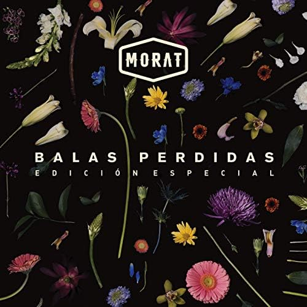

El álbum se caracteriza por el clásico estilo musical de la banda, entre pop, country, rock, balada romántica y urbano. Asimismo, el álbum fue presentado después de su sencillo "Salir con vida" junto al también cantante colombiano Feid. De este álbum, se desprenden algunos sencillos como: «Llamada perdida», «Valen más», «París» y «506» entre otros. En este álbum, están incluidas las participaciones de Duki, Feid y Juanes. El sencillo «Las cometas siempre vuelan en agosto» fue un homenaje a varios líderes sociales de Colombia.
"Sobre el Amor y sus efectos secundarios" es un disco muy homogéneo, pero con una variedad que enriquece sin perder el sello del grupo; esos “detalles” que a ellos tanto les entusiasman se suceden de forma natural. Porque su música está impregnada de raíz colombiana, pero tratada de forma muy global. Por eso el resultado es tremendamente fresco y apetece oír cada una de sus canciones. Las letras son estudiadas y trabajadas, con alusiones a García Márquez y a Neruda. El libreto del álbum viene con “instrucciones de uso” -a lo Cortázar- y poemas del cuarteto -, “son canciones que no salieron”. Un disco que relata, paso a paso y en orden, todas las facetas de una relación romántica en decadencia. El álbum ya certifica el Disco de Oro en España.

El 3 de noviembre de 2017, Morat lanzó "Besos en guerra" en colaboración con Juanes, sin álbum ni título del álbum en mente. La canción tuvo mucho éxito, colocándose en menos de una semana en el número 1 de iTunes y Spotify, siendo número 1 de Los 40, y doble disco de platino.
El 8 de junio de 2018, Morat lanzó, 7 meses después de "Besos en guerra", el segundo sencillo del álbum, "Cuando nadie ve", y aquí la banda ya tiene en mente el disco y su título. La canción siguió los mismos pasos que su predecesora, siendo número 1 de iTunes y Spotify, número 1 de Los 40, y obteniendo disco de platino.